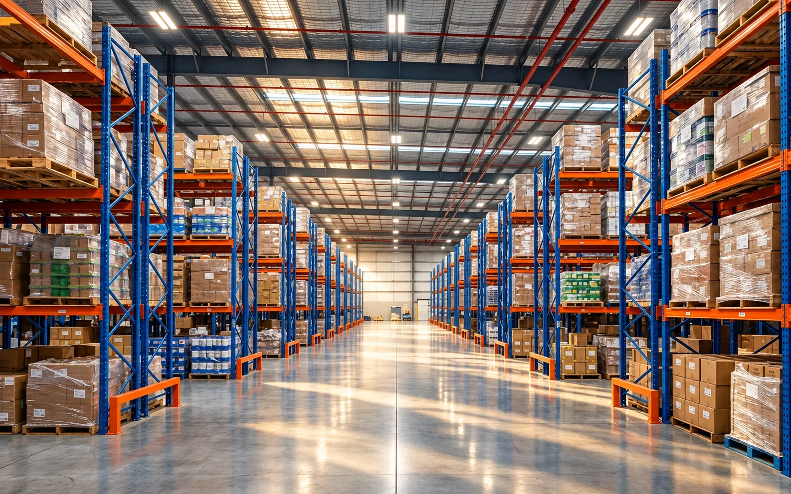

Storage solutions. Designed around your operation.
Every warehouse has different products, capacities, workflows and constraints. Our portfolio combines proven storage systems with engineered solutions designed to make the best use of available space.
Create systems that can evolve with your business.
COMPLETE PRODUCT PORTFOLIO
Industrial Storage & Racking Catalog
Eight core system families, with modern roll-forming and powder-coating capabilities and high-strength steel construction. Final capacities and configurations are determined through project-specific engineering.

SYSTEM 01 // 100% SELECTIVITY
Selective Pallet Racking
The versatile industry workhorse. Provides direct, unrestricted access to every individual pallet with standard forklifts. Completely modular and reconfigurable as inventory profiles evolve.
Bay Load: Up to 20,000 kg
Beam Capacities: 1,000 kg – 4,500 kg per pair
Best For: High SKU variety, FMCG, retail distribution, cold stores
Maximizes vertical warehouse volume by compressing aisle widths down to 1.5m. Turret trucks or man-up order pickers operate guided by wire or mechanical floor rails.
Building Height: Up to 18+ meters
Space Saving: 40%–45% higher storage density
Best For: High land-cost regions, pharmaceutical, e-commerce mega-hubs
Eliminates operating aisles by creating continuous lane tunnels where forklifts drive directly into rack bays. Supports LIFO (Drive-In) or FIFO (Drive-Through) protocols.
Capacity Boost: 60%–80% higher density than standard selective
Vertical modular shelving structures integrated with intermediate steel mesh or timber walkways, access stairs, safety gates, and carton chute drops for multi-level order picking.
Walkway Tiers: 2 to 4 picking levels
Safety: Toe boards, handrails, fire sprinkler integration
Best For: Automotive spare parts, apparel, hardware, electrical items
Unobstructed front-opening storage engineered for oversized, long, and irregular inventory. Structural columns with load-tested cantilever arms withstand heavy point loads.
Arm Capacities: 250 kg – 2,500+ kg per arm
Configurations: Single-sided wall or double-sided central
Best For: Steel pipes, extruded aluminium, timber, PVC conduit, coils
Double or triple your usable warehouse square footage without expanding the building envelope. Custom structural steel or rack-supported mezzanine designs engineered in Tekla/RSTAB.
Floor Loading: 350 kg/m² to 2,000+ kg/m²
Options: Heavy-duty grating, chequered plate, or particle board
Best For: Sorting hubs, office-over-storage, assembly lines, buffer staging
Integrate the racking structure into the building itself for highly dense storage applications, coordinated from engineering through fabrication and erection.
Automated storage combines racking, material-handling equipment and control systems to store and retrieve goods. Configurations include RF shuttle racking, ASRS shuttle, stacker crane ASRS and mini load ASRS. AI-generated concept illustration; equipment layout and integration are confirmed during engineering.
Double-deep racking uses two rack bays to increase the rack-to-aisle ratio for higher storage density. Mobile pallet racks move laterally to create access aisles when required, helping maximise capacity while retaining SKU selectivity.
Heavy-duty, bolt-free & flow shelving
Heavy-duty shelving serves medium-to-heavy goods and mixed palletised and non-palletised storage. Bolt-free shelving supports flexible light-duty and spare-parts storage. Carton and bin flow racking uses gravity for efficient picking and FIFO operations.
What factors determine the right warehouse racking system for a facility?
Selecting the optimal storage system depends on five core parameters: (1) Inventory Profile: pallet dimensions, weights, and SKU diversity; (2) Throughput Velocity: picking frequencies and FIFO vs. LIFO rotation rules; (3) Handling Equipment: mast lift heights and forklift turning radius; (4) Building Envelope: clear floor height, column grid spacing, and slab load capacity; and (5) Future Scalability: planned expansion phases and potential automated shuttle/ASRS integration.
How does ProRack ensure structural safety and seismic compliance?
ProRack models every installation using 3D structural analysis tools (Tekla Structures and RSTAB), accounting for dynamic forklift impact loads, dead loads, and regional seismic zone coefficients in accordance with IS 1893, EN 15512, and FEM 10.2.02. In addition, ProRack is planning collaboration with IIT-Powai to validate and certify structural designs and site installations.
Can existing racking layouts be upgraded or reconfigured?
Yes. ProRack's selective and multi-bay upright patterns are designed for modular adjustment, allowing beam levels to be repositioned on standard 50mm or 75mm pitch increments. Our SmartFit installation team also conducts structural health audits to verify load charts and install safety upgrades such as column protectors, rack end barriers, and mesh decking.